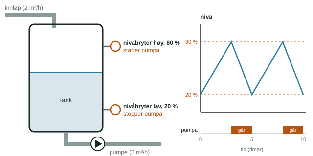

Av/på-styring
Det meste av utstyret i et anlegg er enten av eller på. En pumpe går eller står, en ventil er åpen eller stengt. Her lærer du hvordan slikt utstyr startes og stoppes, for hånd og automatisk etter en måling, og hvorfor en tank med pumpe har to grenser og ikke én.
Av eller på, ingen mellomting
Ved av/på-styring har utstyret bare to tilstander. Det finnes ingen mellomting, slik det gjør med en reguleringsventil som kan stå 37 % åpen. Eksempler:
- Pumper, motorer, røreverk og vifter går eller står. Motoren slås av og på med en kontaktor, en stor elektrisk bryter som får signal fra styresystemet.
- Av/på-ventiler er helt åpne eller helt stengte. En liten ventil kan være en magnetventil, som åpnes og lukkes elektrisk. Større ventiler drives ofte av trykkluft.
- Elektriske varmeelementer er slått av eller på.
Signalene til og fra slikt utstyr er også av eller på. Det betyr at signalet bare har to verdier, for eksempel «start» eller «stopp».
Start og stopp for hånd
Den enkleste av/på-styringen er at operatøren starter og stopper. Det kan gjøres på to steder:
- Lokalt, med start- og stoppknapper ved utstyret ute i anlegget.
- Fra kontrollrommet, ved å klikke på pumpa eller ventilen i skjermbildet.
Mange motorer har en bryter med tre stillinger ved siden av seg: hånd – 0 – auto. I auto bestemmer styresystemet når motoren går. I 0 står den, uansett hva styresystemet sier. I hånd går den, ofte uten at automatikken kan stoppe den. Om forriglingene virker i hånd, avhenger av anlegget. Regn ikke med det. Hånd brukes for eksempel når en pumpe skal prøvekjøres etter reparasjon.
Av/på-styring etter en måling
Ofte er det en måling som bestemmer når utstyret skal slås av og på. Et vanlig eksempel er en tank som tar imot væske, og en pumpe som tømmer den videre:

- Væske renner inn i tanken, og nivået stiger. Pumpa står.
- Når nivået når 80 %, melder den høye nivåbryteren fra, og styringen starter pumpa.
- Pumpa tar ut mer enn det som kommer inn, så nivået synker. Pumpa fortsetter å gå selv om nivået er under 80 %.
- Når nivået når 20 %, melder den lave nivåbryteren fra, og styringen stopper pumpa. Så begynner det på nytt.
Mellom de to grensene skjer det ingenting. Pumpa blir stående i den tilstanden den har. Ved 50 % kan pumpa derfor både gå og stå. Det kommer an på om nivået er på vei opp eller ned.
Her brukes en måling, så styringen har en form for tilbakekobling. Men den holder ikke nivået på ett settpunkt. Nivået får gå opp og ned mellom grensene. Det er greit i en tank der nivået ikke trenger å være nøyaktig, for eksempel en tank som samler opp væske før neste trinn i prosessen.
Fordi den bruker en måling, kalles slik styring i mange bøker også av/på-regulering eller topunktsregulering. Det er det samme som du lærer om her.
Hvorfor to grenser?
Hva om pumpa startet og stoppet på samme nivå, for eksempel 50 %? Da ville pumpa startet straks nivået kom over 50 %, og stoppet like etter når nivået var under igjen. Pumpa ville startet og stoppet hele tiden. Hver start gir en stor strøm i motoren og slitasje på pumpa, og motoren kan bli overopphetet.
Avstanden mellom startgrensen og stoppgrensen kalles hysterese. Stor hysterese gir få starter. Liten hysterese gir mange starter, men nivået holder seg nærmere midten.
Oppgave: Tanken i figuren rommer 10 m³. Det renner inn 2 m³/h hele tiden, og pumpa tar ut 5 m³/h når den går. Pumpa starter ved 80 % og stopper ved 20 %. Hvor mange ganger starter pumpa i døgnet?
Løsning:
- Volumet mellom grensene: 80 % − 20 % = 60 % av 10 m³ = 6 m³.
- Tiden det tar å fylle 6 m³ når pumpa står: \( t = \dfrac{6\ \text{m}^3}{2\ \text{m}^3/\text{h}} = 3\ \text{h} \)
- Når pumpa går, renner det fortsatt inn 2 m³/h. Tanken tømmes derfor med 5 − 2 = 3 m³/h: \( t = \dfrac{6\ \text{m}^3}{3\ \text{m}^3/\text{h}} = 2\ \text{h} \)
- Én runde tar 3 h + 2 h = 5 h. I døgnet blir det \( \dfrac{24\ \text{h}}{5\ \text{h}} = 4{,}8 \) runder.
Svar: Pumpa starter omtrent 5 ganger i døgnet.
Sammenlign: Med grensene 55 % og 45 % er volumet mellom grensene bare 1 m³. Fyllingen tar 30 minutter og tømmingen 20 minutter. Da starter pumpa omtrent 29 ganger i døgnet.
Termostaten: samme idé med temperatur
En termostat slår et varmeelement av og på etter temperaturen. Den virker som nivåbryterne på tanken, med to grenser. Et eksempel er en lagertank med et stoff som blir tykt og vanskelig å pumpe når det blir kaldt. Termostaten slår på varmen når temperaturen synker til 40 °C, og slår den av igjen ved 45 °C. Temperaturen går da opp og ned mellom 40 °C og 45 °C.
Skal temperaturen holdes nøyaktig på én verdi, holder ikke av/på-styring. Da trengs regulering, som du lærer om i emnet Regulering.
Tilbakemelding: gjorde utstyret det det fikk beskjed om?
At styringen sender «start», betyr ikke at pumpa går. En sikring kan ha gått, eller motoren kan være ødelagt. Derfor sender mye utstyr en tilbakemelding til styresystemet:
- En motor melder «går» når kontaktoren har slått på.
- En av/på-ventil har ofte endebrytere som melder «helt åpen» og «helt stengt».
Får styringen ikke tilbakemelding i løpet av noen sekunder, gir den en alarm, for eksempel «startfeil» eller «ventilen nådde ikke stengt stilling». Uten tilbakemelding vet ingen om utstyret faktisk gjorde det det fikk beskjed om.
Bland ikke sammen tilbakemelding og tilbakekobling. En tilbakemelding viser hva utstyret gjør, for eksempel at pumpa går. Tilbakekobling er at måleverdien sendes tilbake til en regulator, slik du så på siden Styring og regulering.
På runde i anlegget hører du at pumpa under tanken lager mye støy. Seglasset viser at tanken er nesten tom, men pumpa går. Den burde ha stoppet ved 20 %.
Slik tenker du:
- Pumpa suger luft og kan bli ødelagt. Stopp den med en gang etter bedriftens rutine, og meld fra.
- Sjekk bryteren ved motoren. Står den i hånd, går pumpa uansett hva nivåbryterne melder. Kanskje noen glemte den der etter en prøvekjøring.
- Står bryteren i auto, er det trolig nivåbryteren som er feil. Se i skjermbildet hva den lave nivåbryteren melder. Melder den «væske» selv om tanken er tom, henger den. Belegg eller slam kan få en flottør til å sette seg fast.
- Nivåbryteren må rengjøres eller byttes og testes før pumpa settes i auto igjen.
Det du lærer: Av/på-styring er aldri bedre enn målingen den bygger på. Når utstyret ikke stopper eller starter som det skal, sjekker du både bryterstillingen ved utstyret og målingen som styrer det.
- En pumpe i auto kan starte når som helst, også om den står stille akkurat nå. Før arbeid på utstyret må det sikres etter bedriftens prosedyre, for eksempel ved at arbeidsbryteren ved motoren slås av og låses.
- I hånd stopper ikke utstyret av seg selv. Sett bryteren tilbake i auto når du er ferdig, og si fra til kontrollrommet.
- En pumpe som går tørr eller mot stengt ventil, blir fort varm og kan bli ødelagt. Følg med når du starter for hånd.
Test deg selv
Hva kjennetegner av/på-styring?
- Utstyret justeres gradvis mellom 0 % og 100 %.
- Utstyret har bare to tilstander, for eksempel går eller står, åpen eller stengt.
- Utstyret kan bare styres for hånd.
Ved av/på-styring finnes ingen mellomting. Av/på-styring kan gjøres både for hånd og automatisk, for eksempel etter en nivåbryter.
Hvorfor starter pumpa ved 80 % og stopper ved 20 %, i stedet for å starte og stoppe ved 50 %?
- For at tanken alltid skal være halvfull
- For at pumpa ikke skal starte og stoppe hele tiden
- Fordi nivåbrytere ikke kan sitte midt på tanken
Med bare én grense ville pumpa startet og stoppet hele tiden. Hver start sliter på pumpa og motoren. Avstanden mellom grensene kalles hysterese.
Tanken i figuren har nivå 50 %, og nivået synker. Går pumpa?
- Ja. Den startet ved 80 % og går til nivået når 20 %.
- Nei. Den går bare når nivået er over 80 %.
- Det kan ikke avgjøres.
Mellom grensene blir pumpa stående i den tilstanden den har. Synker nivået, går pumpa. Stiger nivået, står den.
Bryteren ved en pumpemotor står i hånd. Hva betyr det?
- Styresystemet bestemmer når pumpa går.
- Pumpa står og kan ikke startes.
- Pumpa går, ofte uten at automatikken kan stoppe den.
I hånd går pumpa uansett hva nivåbryterne melder, og om forriglingene virker, avhenger av anlegget. Derfor må bryteren settes tilbake i auto etter for eksempel en prøvekjøring.
Styringen sender «start» til en pumpe, men får ingen tilbakemelding om at den går. Hva skjer?
- Ingenting, fordi styringen har gjort jobben sin
- Styringen gir en alarm, for eksempel «startfeil»
- Styringen åpner en ventil i stedet
Tilbakemeldingen viser om utstyret faktisk gjorde det det fikk beskjed om. Kommer den ikke, får operatøren en alarm. Feilen kan for eksempel være at bryteren ved motoren står i 0, at en sikring har gått, eller at motoren er ødelagt.
Ordliste
| Begrep | Forklaring | Engelsk |
|---|---|---|
| av/på-styring | Styring av utstyr som bare har to tilstander, for eksempel en pumpe som går eller står, eller en ventil som er åpen eller stengt. | on/off control |
| nivåbryter | Nivåmåler som bare sier fra når væsken når et bestemt punkt i tanken. Den er enten av eller på. | level switch |
| hysterese | Avstanden mellom grensen der utstyret slås på, og grensen der det slås av. Hindrer at utstyret starter og stopper hele tiden. | hysteresis |
| termostat | Bryter som slår varme eller kjøling av og på etter temperaturen, med en grense for på og en for av. | thermostat |
| kontaktor | Stor elektrisk bryter som slår en motor av og på når den får signal, for eksempel fra styresystemet. | contactor |
| magnetventil | Ventil som åpnes og lukkes elektrisk av en spole. Den er enten helt åpen eller helt lukket. | solenoid valve |
| av/på-ventil | Ventil som bare er helt åpen eller helt stengt, og som ikke kan stå delvis åpen. | on/off valve |
| hånd – 0 – auto | Bryter ved utstyret med tre stillinger. I hånd går utstyret, i 0 står det, og i auto bestemmer styresystemet. | hand-off-auto (HOA) |
| tilbakemelding | Signal fra utstyret til styresystemet som viser hva utstyret faktisk gjør, for eksempel at en pumpe går eller at en ventil er stengt. | feedback signal |
| endebryter | Bryter på en ventil som melder fra når ventilen er helt åpen eller helt stengt. | limit switch |
Les mer
- Nivåmåling i emnet Måling i anlegget forklarer nivåbrytere og høynivåvern.
- PLS i emnet Styresystemer viser hvordan av/på-styringen er programmert, og hvordan du feilsøker med lampene på PLS-en.
Om kildene: Teksten, eksemplene og figuren på denne siden er laget for dette nettstedet. Siden bygger på undervisningsopplegg i kjemiprosess- og laboratoriefag ved Sauda vgs, som er utarbeidet med utgangspunkt i blant annet Kjemien stemmer, Laboranten og åpne nettkilder.